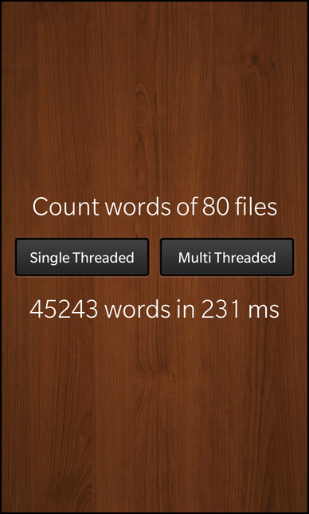

Files:
The QtConcurrent Word Count example demonstrates the use of the map-reduce algorithm when applied to the problem of counting words in a collection of files.

In this example we'll learn how to use the map-reduce algorithm of the QtConcurrent module to execute a parallelizable task distributed over multiple threads to improve the throughput.
The UI of this sample application consists of two buttons, one to start a single-threaded calculation and one to start a multi-threaded calculation. Additionally there are two labels, one that shows the number of files that will be used as input for the calculation and one that shows the number of words in these files and the time it took to count them.
The business logic of the application is encapsulated in the class WordCount, which is exported to the UI as '_wordCount'.
Label { horizontalAlignment: HorizontalAlignment.Center text: qsTr("Count words of %1 files").arg(_wordCount.fileCount) textStyle.color: Color.White textStyle.base: SystemDefaults.TextStyles.BigText }
The first label contains a text with a placeholder that will be substituted with the number of found files as reported by the 'fileCount' property of the WordCount object.
Button { text: qsTr ("Single Threaded") enabled: !_wordCount.active onClicked: _wordCount.countSingleThreaded() } Button { text: qsTr ("Multi Threaded") enabled: !_wordCount.active onClicked: _wordCount.countMultiThreaded() }
Whenever the user clicks the 'Single Threaded' or 'Multi Threaded' buttons, the countSingleThreaded() or countMultiThreaded() slots of the WordCount object are invoked. The buttons are disabled while a calculation is running.
Label { horizontalAlignment: HorizontalAlignment.Center topMargin: 40 text: qsTr("%1 words in %2 ms").arg(_wordCount.wordCount).arg(_wordCount.elapsedTime) textStyle.color: Color.White textStyle.base: SystemDefaults.TextStyles.BigText }
The second label contains a text with placeholders as well, but this time they are substituted with the number of counted words and the elapsed time.
The WordCount is the central class in this sample application that contains all the business logic. It provides the two slots to count the number of words in a single-threaded or multi-threaded way and properties that make the result available to the UI.
When the user clicks the 'Single Threaded' button, the countSingleThreaded() slot of the WordCount object is invoked.
void WordCount::countSingleThreaded() { // Mark the application as active m_active = true; emit activeChanged(); // Start to measure the time QTime time; time.start(); // Count the words single threaded const WordCountMap total = singleThreadedWordCount(m_files); // Update the measured time m_elapsedTime = time.elapsed(); emit elapsedTimeChanged(); // Accumulate the per-file word counts to the total word count const QList<int> counts = total.values(); m_wordCount = std::accumulate(counts.begin(), counts.end(), 0); emit wordCountChanged(); // Mark the application as inactive m_active = false; emit activeChanged(); }
Inside this method at first a timer is started to keep track of the duration of the calculation. Then the helper method singleThreadedWordCount() is called with the list of files to process as parameter (the list of files has been assembled inside the constructor of the WordCount class).
WordCountMap singleThreadedWordCount(const QStringList &files) { WordCountMap wordCount; foreach (const QString &fileName, files) { QFile file(fileName); file.open(QIODevice::ReadOnly); QTextStream textStream(&file); while (textStream.atEnd() == false) { foreach(const QString &word, textStream.readLine().split(" ")) wordCount[word] += 1; } } return wordCount; }
This method iterates over the list of passed file names, opens one after another and counts the number of words by reading the files line by line. The result is stored in a helper structure WordCountMap which maps the file name to the number of words it contains.
typedef QMap<QString, int> WordCountMap;
After the singleThreadedWordCount() call, countSingleThreaded() sums up the total number of words and updates the properties of WordCount accordingly.
When the user clicks the 'Multi Threaded' button, the countMultiThreaded() slot of the WordCount object is invoked.
void WordCount::countMultiThreaded() { // Mark the application as active m_active = true; emit activeChanged(); // Start to measure the time QTime time; time.start(); // Count the words multi-threaded by using QtConcurrent const WordCountMap total = QtConcurrent::mappedReduced(m_files, countWords, reduce); // Update the measured time m_elapsedTime = time.elapsed(); emit elapsedTimeChanged(); // Accumulate the per-file word counts to the total word count const QList<int> counts = total.values(); m_wordCount = std::accumulate(counts.begin(), counts.end(), 0); emit wordCountChanged(); // Mark the application as inactive m_active = false; emit activeChanged(); }
Inside this method a timer is started again to keep track of the duration of the calculation, however this time the QtConcurrent::mappedReduced() method is utilized to distribute the counting of words over multiple threads. The mappedReduced() method expects three parameters
As input data the list of files is passed again. The map function is the helper method countWords()
WordCountMap countWords(const QString &fileName) { QFile file(fileName); file.open(QIODevice::ReadOnly); QTextStream textStream(&file); WordCountMap wordCount; while (textStream.atEnd() == false) { foreach (const QString &word, textStream.readLine().split(" ")) wordCount[word] += 1; } return wordCount; }
This method is similar to singleThreadedWordCount(), just that it counts the words of one file only.
As reduce function we pass the helper method reduce()
void reduce(WordCountMap &result, const WordCountMap &w) { QMapIterator<QString, int> i(w); while (i.hasNext()) { i.next(); result[i.key()] += i.value(); } }
This method is invoked by QtConcurrent::mappedReduced() on the result after all map functions have been executed.